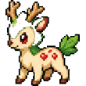

 Grass
Grass Wind
WindTap a stage to read its story.
Vinekit is a small, bright-eyed deer fawn with creamy-gold fur scattered with red-dot markings, a pair of short velvety antlers sprouting green twigs, and two fresh leaf-buds at its rump. Its slim legs are already swift - it races up and down the Gale Ridge's lower slopes, chasing the gusts that rush through the ravines. Wherever Vinekit stops to rest, new shoots push through the cracked stone beneath its hooves. Storm-rangers say the fawn is drawn to the highest points it can reach, always looking up.
Field note: Vinekit leaves a trail of sprouted seedlings wherever it sleeps overnight; a new path of young trees can mark exactly where it rested.
Storm Spire. Vinekit and its family are found in the Storm Spire. See everyone who lives there.
Share a Bond Food that matches its types to become friends. Vinekit loves:
A Bond Food is not a trick. It joins your spirit with the Kimuro's spirit, and only when it chooses you.
Print the Kimuro adventure packs: mazes, cards, a board game and Bond Mark medals.
See the printable packs